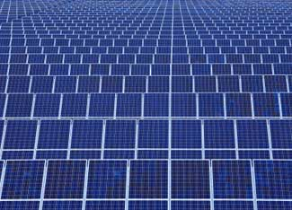

These days, it seems like more and more companies tout “green” images. For some it’s legit; for others, it’s a little more than slick marketing. But among those that are increasing their efforts to be green, a growing number of businesses and institutions are spending serious money on renewable energy; so much so that the U.S. Environmental Protection Agency compiles a quarterly list of the top green power investors through their Green Power Partnership program. Making this list doesn’t mean these are companies perfect, but it's inspiring that they're voluntarily spending millions of dollars on clean energy, which is tremendously beneficial to advancing that technology. Here’s a brief look at the EPA’s program and the top five from their July 2008 report.
The Green Power Partnership, a program initiated by the EPA, recognizes institutions that purchase green power or Renewable Energy Credits as a means of minimizing or offsetting their carbon footprints.
More than 1,000 organizations across the United States, from universities to Fortune 500 companies to local mom-and-pop shops, have joined the program since it began in July 2001. Combined, the group now purchases nearly 16 billion kilowatt hours of green power a year, from solar, wind, geothermal, biomass and biogas sources.
To become a Green Power Partner, an organization must purchase a certain percentage of its total electricity from Green Power resources. Depending on the company’s size, that percentage could be anywhere from 2 percent to 10 percent, though many go above and beyond the minimum criteria.
The EPA accepts green power purchases for the partnership in three forms: Renewable Energy Credits (RECs), utility services and on-site generators. The latter two involve powering facilities directly via renewable energy. RECs, on the other hand, are a bit more complicated.
One REC is equivalent to 1 megawatt hour of green power. When an organization purchases an REC, 1 megawatt hour of energy is added to a utility’s grid system from a renewable resource. RECs are, therefore, a way for organizations to compensate for or offset energy that comes from more conventional resources, such as coal.
Four times a year, the EPA releases an updated list of the top green power partners. Here’s some information about the top five companies from the July 2008 report.
Intel purchased 1.3 billion kWh in RECs January 2008, which compensates for 47 percent of the company’s nationwide electricity use. But Intel’s motivation for this was more than just offsetting a portion of its carbon footprint.
“We hoped to stimulate the market for renewable energy and really start to encourage other companies to take notice and consider making similar changes,” says Christine Dotts, Intel’s environment media relations manager.
Intel’s REC purchases go toward biomass, geothermal, solar and wind energy, and are part of a larger sustainability effort.
PepsiCo purchased 1.1 billion kWh of green power in 2007 - equivalent to 100 percent of its annual electricity use and enough to power 90,000 American homes annually. Since joining Green Power Partnership in 2007, Pepsi has been at or near the top of the EPA’s quarterly list and was named Green Power Partner of the Year in 2007 by the EPA. Beyond buying green power, Pepsi has also implemented numerous policies to conserve and reuse resources used at plant sites and regularly educates personnel on environmental issues - which you can read about in its annual sustainability report.
Having already purchased 9 million kWh this year, the U.S. Air Force has invested in a number of biogas, biomass, geothermal, solar and wind energy providers. The REC purchases account for 9 percent of the Air Force’s total annual electricity usage.
Wells Fargo has purchased 5.5 million kWh in RECs from wind-energy providers this year. The company is also a member of the Green Power Leadership Club and a 2007 Partner of the Year. Wells Fargo has made many other commitments to reducing its impact on the environment, including LEED certifying its buildings.
In 2006 and 2007, Whole Foods Market purchased enough green power to compensate for 100 percent of its energy use, totaling over 5 million kWh annually.
With the recent acquisition of Wild Oats and the addition of more stores, Whole Foods Market won't meet 100 percent of its electricity use with green power purchases this year - however, the company is investing in additional environmental projects as part of its mission to reduce its impact on the environment.
“[Buying RECs] is another way for use to walk our talk,” says Whole Foods Market spokesperson Ashley Hawkins. “We are always working harder and harder to see what we can do. Who knows what’s beyond the horizon.”
Other organizations ranking high on the Green Power Partners list are Starbucks, Johnson & Johnson and the University of Pennsylvania.
Seventy percent of the green power purchases in the EPA partnership are RECs - credits for power added to the grid from renewable resources.
While RECs have been hailed by some as a key tool for renewable energy investments, they also have been met with criticism. Some refer to the purchase of energy credits, rather than actual reduction of carbon emissions, as “checkbook environmentalism.”
What do you think? Are RECs good investments in renewable energy, or are they just an easy way for companies to justify carbon usage? Tell us your thoughts by commenting below.
|
 ISTOCKPHOTO Over 1,000 organizations around the United States are buying utility-scale energy from renewable resources such as wind, solar and biomass. The combined green power purchased by these companies is about 16 billion kilowatt hours a year. |
|
|